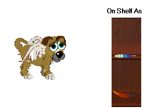
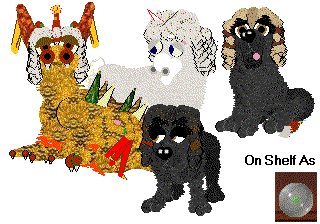

Hex edited Clothes for Petz 5
~~~~~~~~~~~~~~~~~~~~~~~~~~~~~
These are the very few clothes that I've made for the Petz 5 game. I don't
have a great interest in making petz clothes, mainly because there have
always been a lot of people out there making great stuff pretty much since
the game first came out. But there were a couple of things that people
wanted to know how to do, and here they are. They show up separately on the
shelf with rather different graphics; although those on-shelf graphics don't
look anything like the clothes themselves, you should be able to see which
ones are mine.

Wingz for your petz

Wigz for your petz
/
Dreadlocks
2 /
Judge's
wigz